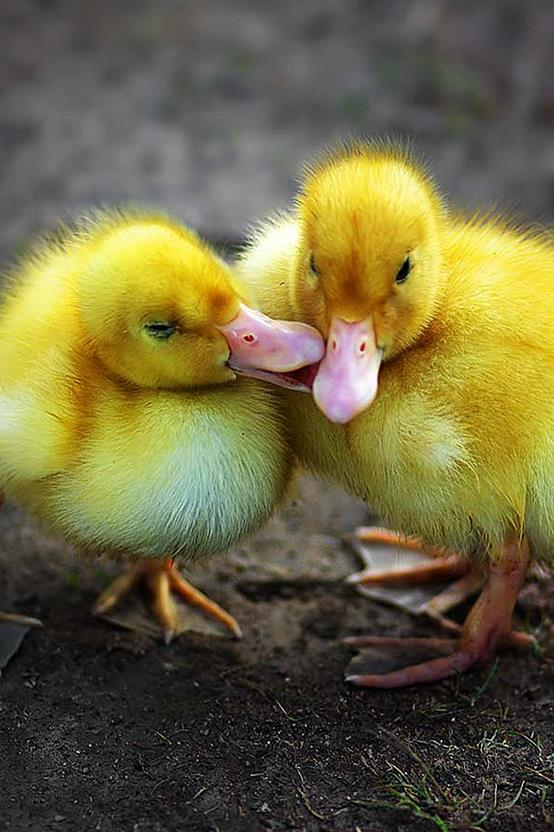
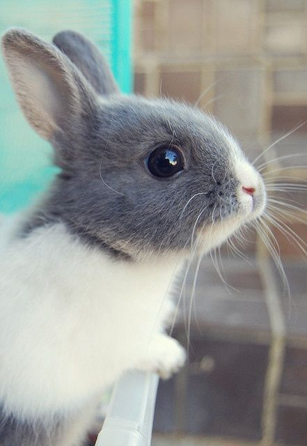
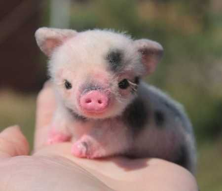
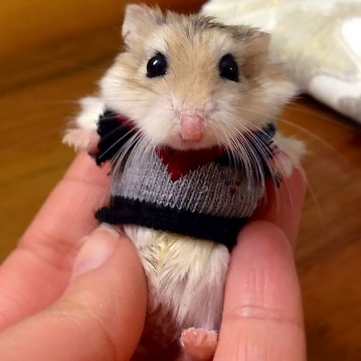

Meet Tommy! He's 8 Weeks Old and is a White/Brown Tabby! Tommy is very playful, loves to cuddle, and is good with other animals!
If you are interested in adopting Tommy, please contact Mary Joice at 367-843-7499

Meet Splash and Squirt! Two 1 Month Old Pekin Ducks are looking for a loving home! Quick-witted, affectionate, and curious,
these two are just a bundle of joy! To take these little ones home, contact Jerry Johnson at 468-830-3580

Meet Whiskers, a very cute 3 Month Old Grey and White Rex Rabbit who's ready to find a new home!
She's quirky, loving, and a very friendly rabbit! To take her home, please contact Logan Mark at 358-826-9302

Meet Sunshine! Only 3 Weeks Old, this little female piglet is no farm pet, she's looking for a loving home just like the rest!
She's energentic and youthful, but she is just as willing to cuddle all night! To claim this little porker, contact Kyle Dose at 738-947-6291

Meet Bugsy, a little chipper
hamster just waiting for a
new family! He's a 5 Month
Old Basic Hamster, who eats
a lot! But other than that
you
can't find a sweeter hamster!
To take him home, please
contact Willow Bass at
639-874-3682
Meet Fluffles, a 4 Month Old Male Teacup Pup that will bring excitement to any home! This little guy may be small but he sure has energy!
Great around other animals and loves new people! To adopt Fluffles, contact Dominque Nicole Rammond at 267-629-7298